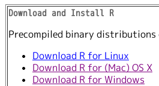
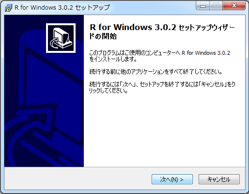
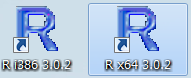
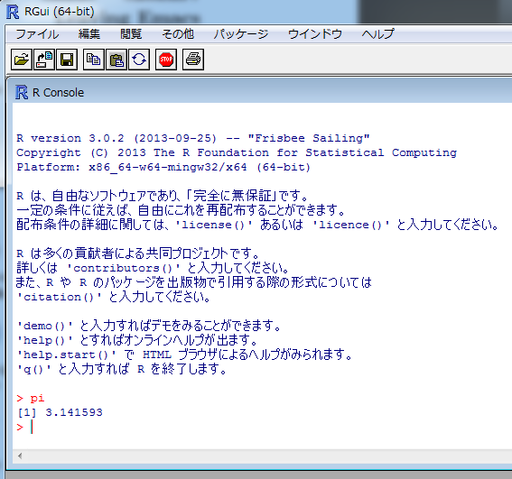

本サイトは『とある弁当屋のデータサイエンティスト2 -- 因子分析大作戦--』共立出版のサポートサイトです。
なお以降のページからこのページ(目次)に戻るには美咲の画像をクリックします
コンテンツ
- Rのインストールと使い方
- 本書のサポートパッケージのインストールと使い方
- 因子分析入門
- 検定
石田基広
本サイトは『とある弁当屋のデータサイエンティスト2 -- 因子分析大作戦--』共立出版のサポートサイトです。
なお以降のページからこのページ(目次)に戻るには美咲の画像をクリックします


Windowsの場合はデスクトップにRとデザインされたアイコンが現われます．二つある場合どっちを使っても構いません 
Macの場合は「アプリケーション」フォルダにRアイコンがあります

それでは，本書の内容をRで確認できるパッケージを導入します
Rのコンソールで>の右に次のように入力してEnterを押します
install.packages("Misaki",repos="http://rmecab.jp/R")
「パッケージ用のフォルダを作成するか？」と尋ねられたらOKを押します
実行後，R コンソールで以下のように入力してEnterを押すと，パッケージが利用できるようになります (Misakiパッケージをロードすると言います)
library (Misaki)
Rを起動して，本書付録パッケージを利用する場合は，最初にこの命令を1回実行します(入力してEnterをおします)
Rを起動し，Misakiパッケージをロードしたら，次のように実行すると，各章に対応した内容が表示されます
demo(chap1)
あとは画面の指示通りに操作していきましょう
ちなみ2章の内容であれば次のように実行します
demo(chap2)
3章以降についても，数字の部分を変更して実行します
各章の内容については，ここを参照してください
this is link to slide1
this is link to slide2